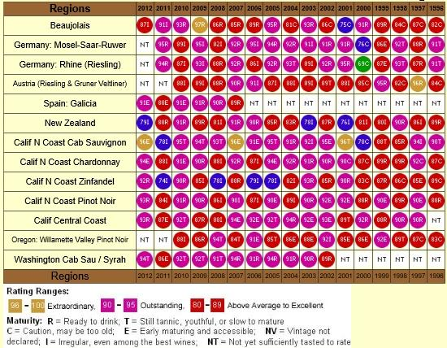
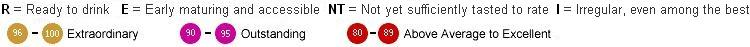
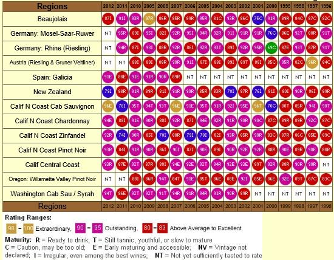
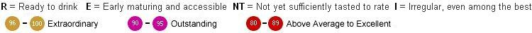

97R 2009 BEAUJOLAIS. THE BROWN DERBY ON GLENSTONE. 3 VINEYARDS. ~$20 @ BOTTLE




http://dfellows.rf.gd/site_html/wine/wine.html
https://www.erobertparker.com/newsearch/vintagechart1.aspx
90R 2009 KENDALL-JACKSON
VINTNER'S RESERVE CHARDONNAY $12 IN 2012
97R 2009 BEAUJOLAIS. THE BROWN DERBY ON GLENSTONE. 3 VINEYARDS. ~$20 @ BOTTLE

